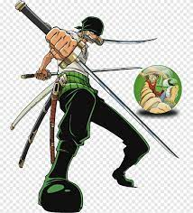

Roronoa Zoro, nicknamed "Pirate Hunter" Zoro, is a fictional character in the One Piece franchise created by Eiichiro Oda. In the story, Pirate Hunter Zoro is the first to join Monkey D. Luffy after he is saved from being executed at the Marine Base